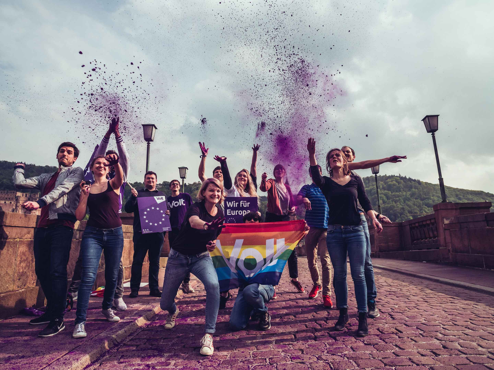

Why vote for Volt Germany in France?
Presenting Volt, the first paneuropean party.
Introducing Volt
Volt
Who are we?
We are Volt. A pan-European movement and party. We were founded in 2017 - as a reaction and active counter-movement to the rising tide of nationalism and populism across Europe. We exist because we are convinced that the great challenges of the 21st century can only be solved if we act together across borders. In a Europe where all people have the same opportunities to develop their full potential. A Europe that strives for the highest standards of human, social, environmental and technical development.
What is our vision?
Volt's long-term vision is to create a federal, united Europe with a common European government, a prime minister elected by parliament and a president. The basis for this is a European Constitution jointly legitimised by European citizens. We are working for this vision with a European programme at all levels and in all countries of Europe. For us, the creation of a federal European republic is not an end in itself, but a means to solve the great challenges of our time together across national borders.
What kind of party is Volt?
Volt is a European party! First and foremost, we are committed to European unification and cross-border cooperation at all levels! We want to reform the European Union so that it can act across borders. We stand firmly against any form of populism and nationalism.
We regard ourselves as pragmatic and progressive. This means: we do not strictly follow an ideology, but always look for the best solutions. We combine social, liberal and green aspects. We are convinced that unilateral national efforts and a policy of isolation are the wrong approach to tackling the challenges of the 21st century.
Federal Elections
Why Volt?
Die Zeit ist reif für die Generation Europa.Angesichts großer politischer Herausforderungen und dem Ende der Ära Merkel ist die Bundestagswahl 2021 eine riesige Chance für uns alle, Wandel anzustoßen und mitzugestalten. Die Zeit ist reif für eine neue Generation in der Politik. Eine Generation, die sich nicht durch das Alter definiert, sondern durch gemeinsame Werte und die Vision eines besseren Europa: Die #GenerationEuropa!
- The Generation Europe thinks and acts across borders. National parties are reaching their limits and yet national governments in the EU Council decide on the future direction of the EU. As a result, Europe is in a continuous process of negotiating national interests. Globalisation is bringing the world ever closer together. There is a need for policies that solve problems across borders.
- For the Generation Europe, Europe is the guarantee for peace and our future - then and now We do not close ourselves off to change, but strive for it actively and courageously. We seize opportunities and want to solve problems pragmatically.
- Generation Europe is united by diversity and shared values. We put cooperation before isolation, no matter where someone comes from and how old they are. In Europe and beyond. That's what Generation Europe is all about!
Was bedeutet "Neue Politik"?
- Pan-European Volt thinks and acts European and makes policy across borders. Our European network and understanding are at the heart of our movement. We take a European perspective first and foremost; because we believe that the challenges of our time can only be solved in a European way.
- Evidence-based Volt's policy positions and content are scientifically founded. In addition to best practices, we incorporate current scientific findings. We argue logically and coherently. We explain our policy positions and content in an understandable way. We make clear the assumptions on which our claims are based and illustrate them with examples.
- Integrative Volt wants to enable active and accessible participation for all people who share our values. This means that volunteers and members can take on responsibility in concrete projects right from the start. We count on you, no matter how old you are, where you come from or how long you have been with us.
- Moving politics We think like a party and act like a movement. We don't just think from election to election. Real political change happens in the long term and on the ground.
What does 'New Europe' mean?
- European Republic: united // federal // reformed
Our goal is one Europe and one democracy: a European Republic that is united and democratically controlled by its citizens. For us, the creation of a federal European Republic is not an end in itself, but a means to solve the great challenges of our time together across national borders. - Self-determined digitisation: independent // secure // open
Your data is your property. We demand a self-determined European digital strategy that focuses on the benefits for citizens. The digital transformation must be pushed in all areas of our society so that it has a lasting impact on us and we are not left behind. For this, we have to invest, invest in an economy with a future! - Climate-protecting economy: climate-neutral // entrepreneurial // social
We are taking a pan-European approach to climate issues, because climate change does not stop at borders. Our goal: We want to be climate neutral not only nationwide, but across Europe by 2040. We want to support entrepreneurs and companies across Europe who are committed to a climate-friendly market economy and make it the benchmark for their entrepreneurial development and technological innovation. So that the economy gets into the green figures! - Relaunch education: individual // lifelong // innovative
We stand for nothing less than a complete reboot of our education system that equips learners with core competencies for the digital century. This requires more cooperation of education policy at the federal level on the one hand, and more school autonomy on the other. However, our focus is always on the child and learning itself - regardless of age. Education should be as individual as our children! - ONE society: integrating // solidarity // active
We want to shape ONE society that is resilient, cohesive and based on solidarity. For the time being, our health care system must focus on the prevention of diseases and not on diseases alone. This is the only way to get health without a virus in the system itself! We become resilient as a society when we stick together. For us, solidarity means that you are covered by solidarity, no matter what path you want to take in your life. For us, solidarity also means that we actively stand up for those who come to us, that we integrate them and give them what every person deserves; a new home on safe paths. We all have a voice in this society. Let us use it for positive things, for more togetherness instead of against each other; against divisions, hatred, injustice and discrimination. We see ourselves as a society with equal opportunities for all.
Having a say instead of being excluded
Why vote for Volt Germany in France?
- More Europe
Volt is now present in all European countries. We have a common European programme that is also the focus of our respective national programmes. Even if EU citizens outside Germany are excluded from national elections like here in France, a vote for Volt Germany is also a vote for Volt France: a vote for more Europe and more cooperation. - More integration
Whether it's access to the labour market or freedom of movement, Europeans abroad are living the European idea. However, our democratic systems remain national in scope. The more we integrate across Europe and are excluded from national elections where we live, the more important it becomes to vote in elections in our home country and to give a vote for more Europe and more integration. - More representation
European parties and transnational lists are legally not possible until now. Therefore, Volt Europe has created national chapters and to try and represent the interests of European citizens. A vote for Volt Germany from abroad is therefore also a vote for Volt Europe and more representation.